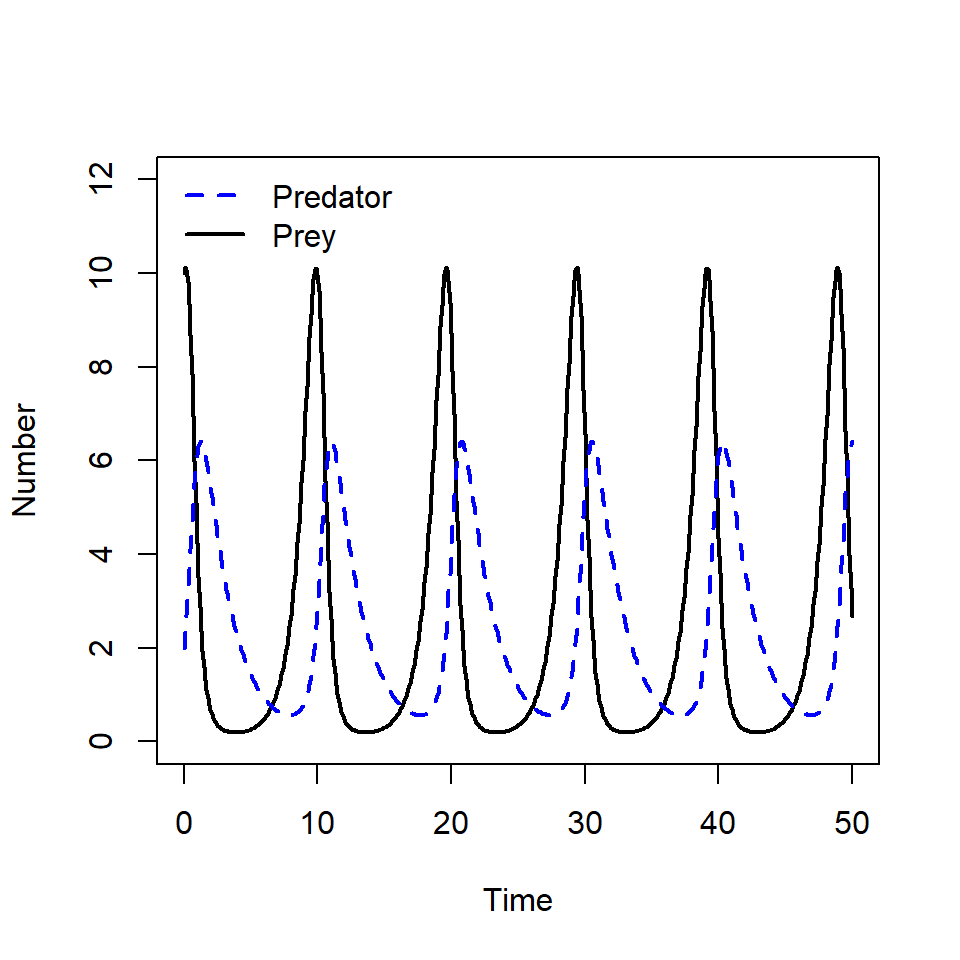
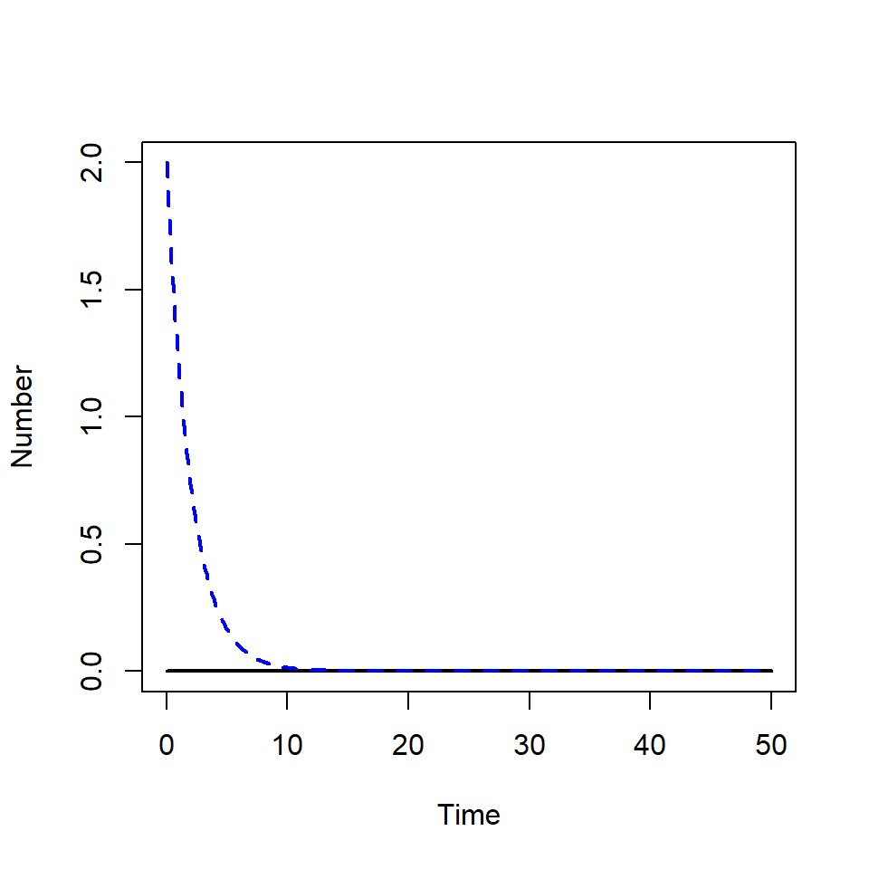
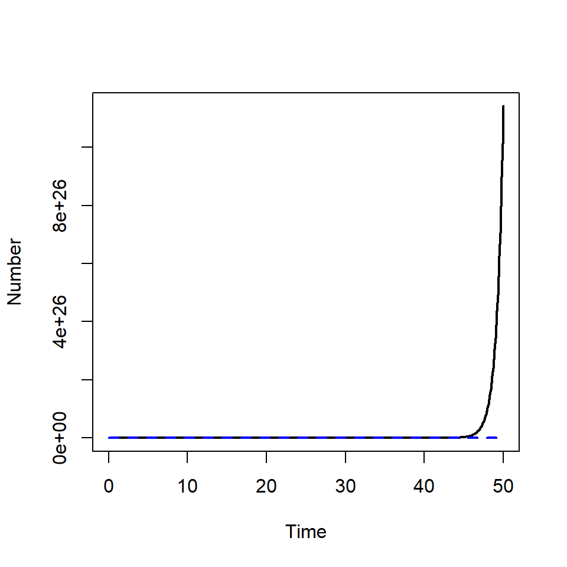

predator_prey <- function(time, state_var, pars) {
# Extract state variables
X <- state_var["X"]
Y <- state_var["Y"]
# Extract model parameters
alpha <- pars["alpha"]
beta <- pars["beta"]
delta <- pars["delta"]
gamma <- pars["gamma"]
# The differential equations
dX <- alpha * X - beta * X * Y
dY <- delta * X * Y - gamma * Y
# Return the equations as a list
sol <- list(c(dX, dY))
return(sol)
}Systems of ODE’s
In our previous ODE models we have only had one state variable, population size \(P\). However, there are many instances where we wish to model the rate of change in of more than one state variable.
For example, modelling the rate of flow of individuals into different disease states in epidemic models or modelling the interaction between more than one population.
In these cases, we write on ODE for the rate of change of each state variable, these equations are a ‘system’ of ODEs. To introduce this idea, we will use a well known system of ODEs, the predator-prey model.
Predator-prey model
The predator-prey model (or the Lotka-Volterra equations) are a system of ODEs that can be used to predict the population size of prey and predators through time.
The schematic below represents our model in the form of a flow diagram. The prey population grows in size due to births, and declines due to death by natural causes and death by predation.
The predator population size grows due to births as a result of predation, i.e. the predators eat the prey to survive. The predators can only die by natural causes - nothing eats the predators!
flow diagram.
We can write down our assumptions from our flow diagram using words. We will write an ODE for each compartment. Therefore we will have two equations, one for prey population size and one for predator population size,
\[ \begin{aligned} \mbox{prey population rate of change} & = \mbox{births} - \mbox{deaths}-\mbox{predation deaths} \\ \mbox{predator population rate of change} &= + \mbox{births via predation} -\mbox{deaths} \end{aligned} \]
We denote \(X\) as the number of prey and \(Y\) as the number of predators. Therefore the prey population rate of change with respect to time is written as \(\frac{dx}{dt}\) and the the predator population rate of change is \(\frac{dY}{dt}\).
We assume that the prey population gives birth at a rate of \(b\) and dies from natural causes at a rate of \(m\). So we can write \(\alpha = b - m\) as the overall growth rate of the prey population.
The prey population also suffer from deaths via predation. The number of prey removed due to predation will depend on the number of contacts between the prey and predators (\(XY\)), the rate of contact and the probability of successful predation given contact. We denote \(\beta\) as the removal rate of prey due to predation, this parameter combines both the rate of contact and the probability of successful predation.
Putting all this together we can write the rate of removal (deaths) of prey due to predation as:
\[\beta X Y.\]
As the prey population declines form predation, the predator population will grow. The number of predators which are added (via births) will depend on the number of contacts between the prey and predators and the rate of contact as before, but now the rate of addition will not be the same as the rate of removal i.e. we cannot assume that the same number of prey that are removed are also added to the predators.
For example, if 5 prey are eaten, that does not mean that 5 predators are then born, the rate of births due to predation occurs at a different rate but due to the same number of contacts. Therefore we introduce another parameter \(\delta\) which represents the growth rate of the predator population as a result of predation.Therefore our growth (births) via predation can be written as:
\[\delta X Y.\]
The predator population also declines from deaths from natural causes, which we assume occurs at a rate of \(\gamma\).
We can now write down our system of ODEs representing the rate of change of he prey and predator populations:
\[ \begin{aligned} \frac{dX}{dt} & = \alpha X-\beta XY \\ \frac{dY}{dt} &= \delta XY -\gamma Y \end{aligned} \]
To find the solution to the system of ODEs over time we will use the deSolve package in R.
Our first task is to write an R function to describe our system of ODEs. As we now have two equations, we have several changes to include, we need to:
- extract two state variables \(X\) and \(Y\)
- include two lines for two ODEs
- return the two derivatives as a list.
The code below shows the R function for the predator-prey model.
As before, we must specify the initial state values. We now have two initial state variables to specify, we will assume \(X(0)=10\) and \(Y(0)=2\).
state_var <- c(X = 10, Y = 2)Then we must create a parameter vector, a times vector and use the ode function to find the solution. Here we will specify the parameter values as follows:
- \(\alpha =1.2\)
- \(\beta = 0.5\)
- \(\delta = 0.2\)
- \(\gamma = 0.5\).
pars <- c(alpha = 1.2, beta = 0.5, delta = 0.2, gamma = 0.5)
times <- seq(from = 0, to = 50, by = 0.1)
solution <- ode(y = state_var, times = times, func = predator_prey,
parms = pars, method = rk4)
head(solution) time X Y
[1,] 0.0 10.000000 2.000000
[2,] 0.1 10.121234 2.327118
[3,] 0.2 10.063833 2.709602
[4,] 0.3 9.803984 3.145046
[5,] 0.4 9.334477 3.623920
[6,] 0.5 8.670826 4.128468There are now three columns in our ode output, one for time and one for each of the state variables \(X(t)\) and \(Y(t)\).
We can plot the model output to investigate the population dynamics over time. We firstly convert the solution to a data frame so we can extract column names.
solution <- as.data.frame(solution)
plot(solution$time, solution$X, type = "l", lwd = 2,
ylim = c(0, 12),
xlab = "Time", ylab = "Number")
lines(solution$time, solution$Y, col = "blue", lty = 2, lwd = 2)
legend("topleft", c("Predator", "Prey"), col = c("blue", "black"),
lty = c(2, 1), lwd = 2, bty = "n")
As the prey population size decreases, the predator population size increases.However, when the prey population becomes too small, the predator population size decreases due to lack of resources. In this period the prey population is able to recover and increases in size.
Then there is enough prey for the predators eat, this behaviour continues in cycle.
Excercise
By specifying different initial state values we can investigate the model behaviour in the absence of either prey or predators. Using the code from the previous lesson, find the solution when:
- there is no prey (HINT: \(X(0)=0\))
- there are no predators (HINT: \(Y(0)=0\)).
Solution
When there are no prey, the predator population cannot grow. The predator population dies from natural causes until there are no predators left.
state_var <- c(X = 0, Y = 2)
solution <- as.data.frame(ode(y = state_var, times = times,
func = predator_prey,
parms = pars, method = rk4))
plot(solution$time, solution$X, type = "l", lwd = 2,
ylim = c(0, max(solution[, c("X", "Y")])),
xlab = "Time", ylab = "Number")
lines(solution$time, solution$Y, col = "blue", lty = 2, lwd = 2)
The prey population is able to grow without predators. As this model does not include any type of self-regulation, the prey population size grows exponentially.
state_var <- c(X = 10, Y = 0)
solution <- as.data.frame(ode(y = state_var, times = times,
func = predator_prey,
parms = pars, method = rk4))
plot(solution$time, solution$X, type = "l", lwd = 2,
ylim = c(0, max(solution[, c("X", "Y")])),
xlab = "Time", ylab = "Number")
lines(solution$time, solution$Y, col = "blue", lty = 2, lwd = 2)